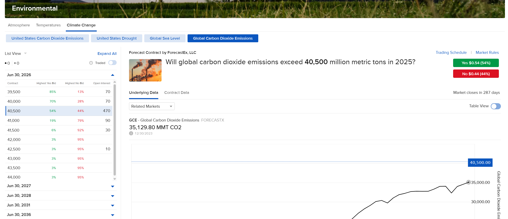

Given the information above, we can establish a working example against the Global Carbon Dioxide Emissions contract on the ForecastTrader Website.
Reviewing the page to the right, we can see all of the contract details necessary to get started.
- Above the chart next to the contract name, we can see the Symbol, “GCE”.
- On the left side of the web page, we can find the contract’s expiration date, June 30, 2026.
- Equally important is the value on the right, “Market closes in 287 days.”
- The bolded excess on the top, 40,5000, indicates our strike price. This can be corroborated by the table on the left which acts like an Option Chain table users may be more familiar with.
While not explicitly stated in the web page, there are several details that may be inferred based on the information present:
- All ForecastEx contracts use the “OPT” security type, as mentioned in the Contract Definition & Discovery section above.
- The ForecastEx exchange value is always listed as “FORECASTX”.
- All currently offered Event Contracts are hosted in the United States of America, and therefore will always use “USD” as their currency value.
- “Yes” or “No” contracts are based on option rights, “Call” and “Put” respectively.

In order to request our specific contract, we will need to focus on the “Market closes in 287 days” statement. This value indicates the last day the contract may be traded.
This document is written on the 19th of March, 2025. That is the 78th day of the calendar year.
Given the context that this is day 78, and the market will close in 287 days, the contract’s last trade date would then be the 365th day of the year, or December 31st, 2025.
Given the TWS API date standards, this will be written as 20251231.
This information can now be distilled into a standard TWS API contract definition:
Symbol: “GCE”
SecType: “OPT”
Exchange: “FORECASTX”
Currency: “USD”
LastTradeDateOrContractMonth: “20251231”
Right: “C”
Strike: 40500
contract= Contract()
contract.symbol = "GCE"
contract.secType = "OPT"
contract.currency = "USD"
contract.exchange = "FORECASTX"
contract.lastTradeDateOrContractMonth = "20251231"
contract.right = "C"
contract.strike = 40500